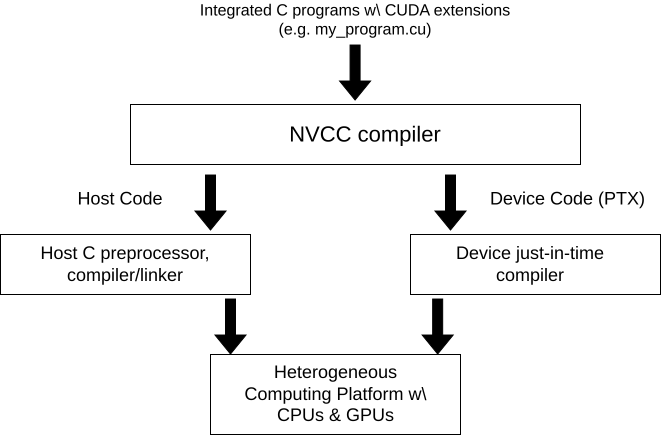
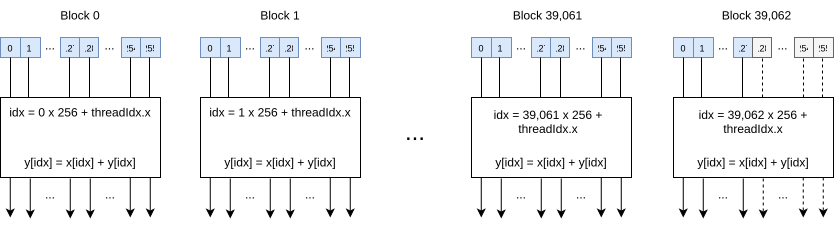
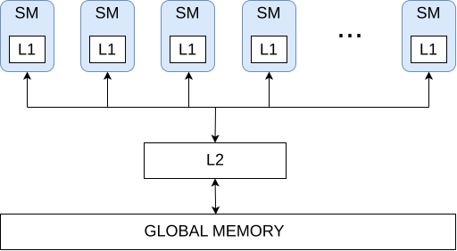
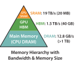
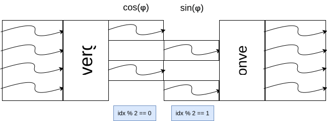
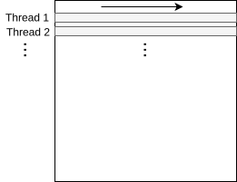
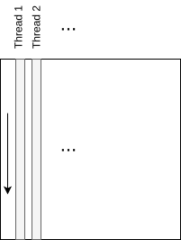

Introduction
CUDA (Compute Unified Device Architecture) is a parallel computing platform and application programming interface (API) model created by NVIDIA. It allows software developers to use a CUDA-enabled graphics processing unit (GPU) for general purpose processing – an approach known as GPGPU (General-Purpose computing on Graphics Processing Units). The CUDA platform is a software layer that gives direct access to the GPU's virtual instruction set and parallel computational elements, for the execution of compute kernels.
Getting Started
To get started with CUDA programming, you will need to install the CUDA Toolkit on your system. The CUDA Toolkit is a software package that includes everything you need to develop CUDA applications. It includes the CUDA C compiler, libraries, and tools for developing, debugging, and optimizing your CUDA code.
You can download the CUDA Toolkit from the Nvidia website. Once you have installed the CUDA Toolkit, you can start writing CUDA programs using the CUDA C programming language. CUDA C is an extension of the C programming language that includes special keywords and features for programming GPUs.
To compile and run a CUDA program, you will need to use the nvcc compiler, which is included with the CUDA Toolkit. The nvcc compiler takes CUDA C source code and generates an executable that can be run on a CUDA-enabled GPU.
Table of Contents
- 1. Compilation process
2. GPU parallelism
3. Example: Vector addition
3.1 Sequential implementation
3.2 OpenMP implementation
3.3 CUDA implementation
4. Memory hierarchy
5. Warp divergence and SIMD
6. Coalesced memory access
7. Example: Matrix multiplication
7.1 Sequential C++ implementation
7.2 Naive CUDA implementation
7.3 Tiled CUDA implementation
7.4 Roofline analysis
7.5 Optimizations
8. Race condition and atomic operations
9. Example: Flash attention
10. Useful resources
1. Compilation process
The compilation process for a CUDA program is similar to that of a regular C program, with a few additional steps. When you compile a CUDA program, the CUDA compiler (nvcc) generates two separate executables: one for the host (CPU) and one for the device (GPU). The host executable is responsible for launching the GPU kernel, while the device executable contains the actual GPU kernel code.
To compile a CUDA program, you can use the following command:
nvcc -o my_program my_program.cu
This command compiles the CUDA program in the file my_program.cu and generates an executable called my_program. The resulting executable can be run on a CUDA-enabled GPU.

2. GPU parallelism
The GPU is a massively parallel processor that is optimized for data-parallel workloads. It consists of multiple streaming multiprocessors (SMs), each of which contains multiple CUDA cores (also called streaming processors (SPs)). The CUDA cores are the basic processing units of the GPU, and they execute the individual threads of a CUDA program. You may already be familiar with multithreading in CPU programming, where multiple threads are executed concurrently on a multi-core CPU. In GPU programming, the concept is similar, but on a much larger scale. A GPU can have hundreds or thousands of CUDA cores, each of which can execute multiple threads concurrently. To take advantage of the massive parallelism of the GPU, you need to write your CUDA programs in a way that allows them to be executed efficiently on the GPU. This typically involves breaking your program into many small threads that can be executed in parallel on the GPU.
The CUDA programming model is based on the concept of threads and blocks. A thread is the smallest unit of execution in a CUDA program, and a block is a group of threads that are executed together on a single SM. The threads within a block can communicate with each other using shared memory, which is a fast, on-chip memory that is shared by all threads in the block. All threads in the grid execute the same kernel function.
As a rough rule of time, the parallelizable portion of code can run 100x faster on GPU than on CPU. The overall speedup can be calculated by Amdahl's law as \[ \text{Theoretical Speedup} = \frac{1}{(1 - p) + \frac{p}{s}} \overset{e.g. p = 40 \%, s = 3}{=} \frac{1}{(1 - 0.4) + \frac{0.4}{3}} \approx 1.36. \] Here, \(p\) is the parallelizable portion of the code and \(s\) is the speedup of the parallelizable portion.
Data parallelism is a common form of parallelism in CUDA programming, where the same operation is performed on multiple data elements in parallel. This is achieved by launching multiple threads to process different data elements concurrently. Data parallelism is well-suited for problems that can be parallelized across multiple data elements, such as vector addition, matrix multiplication, and image processing.
Task parallelism is another form of parallelism in CUDA programming, where different tasks are executed in parallel. This is achieved by launching multiple blocks of threads to perform different tasks concurrently. Task parallelism is well-suited for problems that can be parallelized across multiple tasks, such as parallel sorting, parallel search, and parallel tree traversal.
3. Example: Vector addition
The toy example for CUDA programming is vector addition. In this example, we will add two vectors of the same length and store the result in a third vector. Mathematically, the operation can be represented as: \[ \vec{z} := \begin{pmatrix}z_1 \\ z_2 \\ \vdots \\ z_n \end{pmatrix} = \begin{pmatrix}x_1 \\ x_2 \\ \vdots \\ x_n \end{pmatrix} + \begin{pmatrix}y_1 \\ y_2 \\ \vdots \\ y_n \end{pmatrix} =: \vec{x} + \vec{y}. \]
3.1 Sequential implementation
 Code
Code
The sequential implementation of vector addition is straightforward. We can write a simple C++ program that adds two vectors element-wise and stores the result in a third vector. The following code snippet shows the sequential implementation of vector addition:
void add(int n, float *x, float *y)
{
for (int i = 0; i < n; i++)
y[i] = x[i] + y[i];
}
In this code snippet, the add function takes three arguments: n, which is the length of the vectors, and two pointers x and y, which point to the input vectors. The function adds the elements of the two input vectors x and y element-wise and stores the result in the output vector y.
The wall time of the sequential implementation is \(t_{\text{sequential}} = 37\) milliseconds for vectors with 10 million elements.
3.2 OpenMP implementation
Code
The OpenMP implementation of vector addition parallelizes the operation using multiple threads, but still using only the CPU. The following code snippet shows the OpenMP implementation of vector addition:
void add(int n, float *x, float *y)
{
#pragma omp parallel for
for (int i = 0; i < n; i++)
y[i] = x[i] + y[i];
}
In this code snippet, the add function is annotated with the OpenMP pragma #pragma omp parallel for, which instructs the compiler to parallelize the for loop using multiple threads. The compiler automatically distributes the iterations of the loop across the available threads, which can improve the performance of the program.
The wall time of the OpenMP implementation is \(t_{\text{OpenMP}} = 24\) milliseconds for vectors with 10 million elements.
3.3 CUDA implementation
Code
The CUDA implementation of vector addition parallelizes the operation using the GPU. The following code snippet shows the CUDA implementation of vector addition:
__global__ void add(int n, float *x, float *y)
{
int idx = blockIdx.x * blockDim.x + threadIdx.x;
if (idx < n)
y[idx] = x[idx] + y[idx];
}
In this code snippet, the add function is annotated with the CUDA keyword __global__, which indicates that the function is a CUDA kernel that will be executed on the GPU.
| Qualifier | Description |
|---|---|
__host__ |
Indicates that the function is to be executed on the host (CPU). [default] |
__global__ |
Indicates that the function is a GPU kernel that will be executed on the device (GPU) and can be called from the host. |
__device__ |
Indicates that the function is to be executed on the device (GPU) and can only be called from other device or global functions. |
The CUDA kernel add takes three arguments: n, which is the length of the vectors, and two pointers x and y, which point to the input vectors. The function calculates the index of the current thread using the built-in variables blockIdx.x and threadIdx.x, and adds the elements of the two input vectors x and y element-wise.
To launch the CUDA kernel, you need to specify the number of blocks and threads per block using the <<<...>>> syntax. The following code snippet shows how to launch the CUDA kernel:
int blockDim = 256;
int gridDim = ceil((double)N / blockDim);
add<<<gridDim, blockDim>>>(N, d_x, d_y);
In this code snippet, the blockDim variable specifies the number of threads per block, and the gridDim variable specifies the number of blocks in the grid. The <<<gridDim, blockDim>>> syntax is used to launch the CUDA kernel with the specified grid and block dimensions. Instead of using the for-loop as in the sequential and OpenMP implementations, the CUDA kernel is executed by multiple threads in parallel on the GPU. To subdivide the work among the threads, the vector addition is performed for blocks of size 256 (blockDim) and the number of blocks required is the total number of blocks needed to cover the entire vector, i.e. ceil(N / blockDim) = 39,063 (gridDim) for N = 10 million. Note that the number of threads per block should be a multiple of 32, as the GPU executes threads in warps of 32 threads each but more on that later. On another note, the size of the vector is not a multiple of 256, so the last block will have fewer threads than the others. This is handled by the if statement in the CUDA kernel and you might need to play around with the block size to find the optimal performance.
gridDim and blockDim parameters in the execution configuration can also be dim3 objects. This allows you to specify a 3D grid of thread blocks, which can be useful for higher order tensors like matrices. The launch configuration above is equivalent to
dim3 blockDim(256,1,1);
dim3 gridDim(ceil((double)N / blockDim.x),1,1);
add<<<gridDim, blockDim>>>(N, d_x, d_y);
That means that the other two dimensions are set to 1 by default.

Finally, we need to talk about data transfer between the host and the device.
CUDA requires manual memory management, which means that you need to allocate memory on the device, copy data from the host to the device, launch the CUDA kernel, copy the result back to the host, and free the memory on the device.
To allocate memory on the device, you can use the cudaMalloc function, which allocates a block of memory on the device and returns a pointer to the allocated memory. Then, the input vectors x and y are copied to the device memory using cudaMemcpy before launching the CUDA kernel, and the result vector is copied back to the host memory again with cudaMemcpy after the kernel has finished executing. Finally, the memory can be freed after the computation. The following code snippet shows how to copy data between the host and device:
// Allocate memory on the device
float *d_x, *d_y;
cudaMalloc((void **)&d_x, N * sizeof(float));
cudaMalloc((void **)&d_y, N * sizeof(float));
cudaMemcpy(d_x, h_x, N * sizeof(float), cudaMemcpyHostToDevice);
cudaMemcpy(d_y, h_y, N * sizeof(float), cudaMemcpyHostToDevice);
// Launch kernel on the GPU
// ...
// Copy result back to host
cudaMemcpy(h_y, d_y, N * sizeof(float), cudaMemcpyDeviceToHost);
// Free memory
cudaFree(d_x);
cudaFree(d_y);
We have deliberately omitted the initialization of the input vectors x and y as h_x and h_y on the host, as well as the cleanup of the host memory and the CUDA kernel launch. Note that many developers use h_ or _h in their variable names to indicate that they are host memory, and d_ or _d for device memory. As a concluding remark, we will see in the next section that data transfer between the host and the device can be expensive and one option to avoid this is to initialize the data directly on the GPU if possible (as in our toy example where the data is known in advance).
The wall time of the CUDA kernel is \(t_{\text{CUDA}} = 0.6\) milliseconds for vectors with 10 million elements on a T4 GPU.
4. Memory hierarchy
The memory hierarchy in CUDA consists of several levels of memory that have different characteristics in terms of size, speed, and access latency. The memory hierarchy includes the following levels of memory:
- Registers: Registers are the fastest and smallest type of memory in the memory hierarchy. They are private to each thread and are used to store the thread's local variables and intermediate results. Registers have the lowest access latency of all memory types but are limited in size. The number of registers per thread can vary, but it's typically in the range of tens to hundreds. The access speed is extremely fast.
- Shared memory: Shared memory is a fast, on-chip memory that is shared by all threads in a block. It is used to store data that needs to be shared among threads in the same block. Shared memory has lower access latency than global memory but is limited in size and is not persistent across kernel launches. Shared memory is typically 16 KB to 64 KB per block of threads. The access speed is very fast, but slower than registers.
- L1 cache: The L1 cache is a small, on-chip cache that is shared by all threads in a streaming multiprocessor (SM). It is used to cache data from global memory to reduce memory access latency. The L1 cache is managed automatically by the hardware and does not need to be explicitly managed by the programmer. The L1 cache and shared memory share the same hardware. The size of the L1 cache can vary, but it's typically in the range of tens of KBs.
- L2 cache: The L2 cache is a larger, off-chip cache that is shared by all streaming multiprocessors (SMs) on the GPU. It is used to cache data from global memory to reduce memory access latency. The L2 cache is managed automatically by the hardware and does not need to be explicitly managed by the programmer. The size of the L2 cache can vary, but it's typically in the range of hundreds of KBs to a few MBs. The access speed is slower than the L1 cache.
- Global memory: Global memory is the largest and slowest type of memory in the memory hierarchy. It is used to store data that needs to be accessed by all threads in a kernel. Global memory has the highest access latency of all memory types but is persistent across kernel launches. The size of global memory is the largest and can be up to several GBs. The access speed is the slowest of all memory types.
Additional memory types include constant memory and texture memory, which are read-only memory types that have special caching mechanisms to optimize memory access patterns.

The memory hierarchy in CUDA is designed to optimize memory access patterns and reduce memory access latency. By using the appropriate memory types and optimizing memory access patterns, you can improve the performance of your CUDA programs.

5. Warp divergence and SIMD
In CUDA programming, threads are organized into groups called warps. A warp is the smallest unit of execution in a CUDA program and consists of 32 threads. The threads in a warp are executed in single instruction, multiple data (SIMD) fashion, which means that all threads in the warp execute the same instruction at the same time on different data elements.
The SIMD execution model in CUDA allows the GPU to execute multiple threads in parallel on the same instruction, which can improve the performance of the program. However, if the threads in a warp execute different instructions, it is called warp divergence, which can reduce the performance of the program.
Warp divergence occurs when the threads in a warp take different paths in the code, such as in an if-else statement. When this happens, the GPU has to execute both paths of the code, which can reduce the efficiency of the SIMD execution model. To avoid warp divergence, it is important to write CUDA programs in a way that minimizes the number of divergent branches and maximizes the number of threads that follow the same path in the code. We will illustrate this with a simple example:
__global__ void polar_coord(int n, float *phi, float *z)
{
int idx = blockIdx.x * blockDim.x + threadIdx.x;
if (idx < 2 * n)
{
if (idx % 2 == 0)
z[idx] = cos(phi[idx / 2]);
else
z[idx] = sin(phi[idx / 2]);
}
}
The full code can be found
here.
In this code snippet, the CUDA kernel polar_coord calculates the polar coordinates of a set of points given their angles \(\varphi\) (phi). The angles are stored in the phi array, and the polar coordinates are stored in the z array. The kernel uses an if-else statement to determine whether to calculate the cosine or sine of the angle based on the index of the thread. This code snippet contains warp divergence because the threads in the warp take different paths in the code based on the value of the idx variable, i.e. all even threads calculate the cosine and all odd threads calculate the sine.

As can be seen from the diagram, in the worst case scenario, the threads in the warp are split into two groups, one group that calculates the cosine and one group that calculates the sine. These groups are executed sequentially, which reduces the efficiency of the SIMD execution model. The wall time of the CUDA kernel with warp divergence is \(t_{\text{warp divergence}} = 1.38\) milliseconds for vectors with 10 million elements on a T4 GPU. To avoid warp divergence, you can rewrite the code to eliminate the if-else statement and calculate both the cosine and sine of the angle in parallel. This can be achieved by using a single branch that calculates both values and stores them in the output array. The following code snippet shows how to rewrite the CUDA kernel to avoid warp divergence:
__global__ void polar_coord(int n, float *phi, float *z)
{
int idx = 2 * (blockIdx.x * blockDim.x + threadIdx.x);
if (idx < 2 * n)
{
z[idx] = cos(phi[idx / 2]);
z[idx+1] = sin(phi[idx / 2]);
}
}
The wall time of the CUDA kernel without warp divergence is \(t_{\text{no divergence}} = 1.10\) milliseconds for vectors with 10 million elements on a T4 GPU.
Finally, one could also use float2 to store the cosine and sine values in a single variable and use CUDA's built-in functions __sinf and __cosf to calculate the sine and cosine values. This would further reduce the number of instructions and improve the performance of the kernel and leads to a wall time of \(t_{\text{fast math}} = 0.97\) milliseconds for vectors with 10 million elements on a T4 GPU.
6. Coalesced memory access
Coalesced memory access is a technique which allows optimal usage of the global memory bandwidth. When threads in the same warp access to consecutive locations in the global memory, the most favorable access pattern is achieved. This is caused by the memory which fetches data from DRAM in so-called bursts. We thus do not fetch a single element but a block of elements. The size of a DRAM burst is 32 bytes, which corresponds to the size of a warp (32 threads) in CUDA. If all threads in a warp access consecutive locations in the global memory, the GPU can fetch the data in a single DRAM burst, which maximizes the memory bandwidth. In the case of non-coalesced memory access, the threads in a warp access non-consecutive locations in the global memory, which results in multiple DRAM bursts being required to fetch the data. This reduces the memory bandwidth and can lead to performance degradation.
Let us consider the following example to better understand coalesced memory access. We have a 2D matrix in the global memory and we want to read it prior to performing some computation. The matrix is stored in row-major layout, which means that the elements of each row are stored consecutively in memory. Let us consider a general 3-by-3 matrix:
| \(A_{0,0}\) | \(A_{0,1}\) | \(A_{0,2}\) |
| \(A_{1,0}\) | \(A_{1,1}\) | \(A_{1,2}\) |
| \(A_{2,0}\) | \(A_{2,1}\) | \(A_{2,2}\) |
In memory, the matrix is stored in the linearized order:
| \(A_{0,0}\) | \(A_{0,1}\) | \(A_{0,2}\) | \(A_{1,0}\) | \(A_{1,1}\) | \(A_{1,2}\) | \(A_{2,0}\) | \(A_{2,1}\) | \(A_{2,2}\) |
Let us now go over two types access patterns of the matrix, if we only have 3 threads.
The first option would be to have a horizontal access pattern, where each thread reads a row of the matrix:

For the horizontal access pattern, we load the elements of the matrix as follows:
- Load iteration 1:
- Thread 1: \(A_{0,0}\)
- Thread 2: \(A_{1,0}\)
- Thread 3: \(A_{2,0}\)
- Load iteration 2:
- Thread 1: \(A_{0,1}\)
- Thread 2: \(A_{1,1}\)
- Thread 3: \(A_{2,1}\)
- Load iteration 3:
- Thread 1: \(A_{0,2}\)
- Thread 2: \(A_{1,2}\)
- Thread 3: \(A_{2,2}\)
The second option would be to have a vertical access pattern, where each thread reads a column of the matrix:

For the vertical access pattern, we load the elements of the matrix as follows:
- Load iteration 1:
- Thread 1: \(A_{0,0}\)
- Thread 2: \(A_{0,1}\)
- Thread 3: \(A_{0,2}\)
- Load iteration 2:
- Thread 1: \(A_{1,0}\)
- Thread 2: \(A_{1,1}\)
- Thread 3: \(A_{1,2}\)
- Load iteration 3:
- Thread 1: \(A_{2,0}\)
- Thread 2: \(A_{2,1}\)
- Thread 3: \(A_{2,2}\)
For some applications, it might be difficult to achieve coalesced memory access, especially when the access pattern is not known in advance. In such cases, you can use shared memory to manually manage the memory access pattern and improve the performance of your CUDA programs. Shared memory is a fast, on-chip memory that is shared by all threads in a block and can be used to store data that needs to be accessed in a coalesced manner. This is called corner turning, which turns a vertical access pattern (coalesced) into a horizontal one (non-coalesced). This way you can read the data from the global memory in a coalesced manner into the shared memory and then access the shared memory with the desired access pattern.
7. Example: Matrix multiplication
Matrix multiplication is a common operation in linear algebra and machine learning. The operation involves multiplying two matrices \(A \in \mathbb{R}^{M \times K}\) and \(B \in \mathbb{R}^{K \times N}\) to produce a resulting matrix \(C \in \mathbb{R}^{M \times N}\) where each element \(C_{i,j}\) is the dot product of the \(i\)-th row of \(A\) and the \(j\)-th column of \(B\), i.e. \[ C_{i,j} = \sum_{k=1}^{K} A_{i,k} B_{k,j}. \]
Work in progress... (TODO)
8. Race condition and atomic operations
A common issue in parallel programming is the race condition, when the outcome of a program depends on the order in which threads are executed. The simplest example of this is when two threads try to increment the same variable at the same time. The following code snippet shows an example of a race condition:
__global__ void add(int n, float *x, float *y)
{
int idx = blockIdx.x * blockDim.x + threadIdx.x;
if (idx < n)
*y += x[idx];
}
The full code can be found
here.
In this code snippet, the CUDA kernel add tries to compute the sum of all elements in the input vector x and store the result in the float y. But the code is incorrect because multiple threads are trying to write to the same memory location *y at the same time, which only works if the threads are executed sequentially. Therefore the result will be incorrect and the program will have an undefined behavior since the result depends on the order in which the threads are executed.
To avoid running into race conditions in your parallel programs, you can use atomic operations. Atomic operations are operations that are executed as a single, indivisible unit, which means that no other threads can access the memory location being modified until the operation is complete. This ensures that the memory location is updated correctly and avoids race conditions. For our example, we can use the atomic add operation, which inturn serializes the addition operation applied to the memory location. The following code snippet shows how to use the atomic add operation for the previous example:
__global__ void add(int n, float *x, float *y)
{
int idx = blockIdx.x * blockDim.x + threadIdx.x;
if (idx < n)
atomicAdd(y, x[idx]);
}
The atomic add operation atomicAdd ensures that for this example, the additions are performed sequentially instead of being modified by multiple threads at the same time. This way, the result will be correct and the program will not have any undefined behavior.
For a complete list of atomic operations (add, sub, max, min, xor, ...) that can be used in CUDA, you can refer to the CUDA C Programming Guide.
We have seen so far that the parallel execution of threads can cause race conditions if we modify the same memory location. Atomic operations can be used to avoid this issue by ensuring that the memory location is updated atomically which executes the atomic operations sequentially to avoid undefined behavior. Nevertheless, we want to avoid serialization as much as possible, as it can lead to performance degradation, c.f. the warp divergence section. The two common ways to reduce the need for atomic operations are to use privatization and aggregation. Privatization means that each thread has its own copy of the variable and updates it independently before performing an atomic operation to combine the results. Aggregation means that threads perform multiple operations on the shared memory before performing an atomic operation to combine the results, e.g. we could sum up the values in shared memory for a subset of the input array before performing an atomic add operation. This would greatly reduce the number of atomic operations needed and thus make our code faster.
9. Example: Flash attention
TODO10. Useful resources
Official resources
- CUDA Documentation
- CUDA Toolkit
- CUDA C Programming Guide
- Programming Massively Parallel Processors book